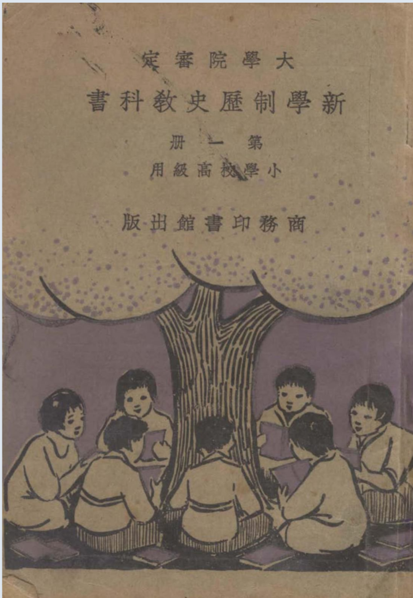

Occurrences
15
Exact minzu hits in this book

Textbook
This view contains all KWIC results for 民族 in this book, followed by the book's individual frequency result.
This table lists every minzu KWIC result found in this textbook.
| No. | Left context | Keyword | Right context |
|---|---|---|---|
| 155 | 新學制高級小學歷史教科書第一册目次人類和文化的起原中國太古的傳說34古代 | 民族 | 的競爭一五古代民族的競爭二七5古代民族的競爭三九6古代文化的變遷一7古代文化的變遷二十一8古代文化的 |
| 156 | 新學制高級小學歷史教科書第一册目次人類和文化的起原中國太古的傳說34古代民族的競爭一五古代 | 民族 | 的競爭二七5古代民族的競爭三九6古代文化的變遷一7古代文化的變遷二十一8古代文化的變遷三十三9秦的統 |
| 157 | 小學歷史教科書第一册目次人類和文化的起原中國太古的傳說34古代民族的競爭一五古代民族的競爭二七5古代 | 民族 | 的競爭三九6古代文化的變遷一7古代文化的變遷二十一8古代文化的變遷三十三9秦的統一十五10漢和匈奴的 |
| 158 | 教擾傳亂來二十三14南北朝分立二十五15漢晉南北朝的文化一二十七16漢晉南北朝的文化二三十17唐和各 | 民族 | 的關係三十一18五代的擾亂三十四 |
| 159 | 用一塊獸皮遮住前膝。他們用的器具,不過是粗石頭和石片。過了好些時,這些人類,漸漸的散布各處,成爲許多 | 民族 | ;各樣文化,也漸漸起來。他們知道把石片磨細,或把樹幹削尖,用做兵器。知道鑽木取火,把鳥獸的肉,燒熟來 |
| 160 | 有長|弓快箭,率領部下,同蚩|尤開仗|,把蚩_尤殺了。後來,就代炎|帝做天子,征服許多部落。」3古代 | 民族 | 的競爭一黃|帝蚩|尤的戰事,雖然是史家傳說,年代荒遠;不過古代旣有許多民族,彼此爭鬬,是一定不免的。 |
| 161 | 子,征服許多部落。」3古代民族的競爭一黃|帝蚩|尤的戰事,雖然是史家傳說,年代荒遠;不過古代旣有許多 | 民族 | ,彼此爭鬬,是一定不免的。史家又說:「黃|帝以後,有帝|堯帝|舜,那時眞是中|國的黃金時代,天下太平 |
| 162 | 起兵,帶領西方各族,攻到河|南;紂|王大敗,商|朝就滅亡了。這商|周革命,顯然是 | 民族 | 上的競爭,但是虐害百姓的桀|紂,都不能逃|滅亡的禍,很可以警戒後人。壬古代民族的競爭二周|武|王做天 |
| 163 | 。這商|周革命,顯然是民族上的競爭,但是虐害百姓的桀|紂,都不能逃|滅亡的禍,很可以警戒後人。壬古代 | 民族 | 的競爭二周|武|王做天子,滅了許多國,大封自已的子弟和功臣,叫做一諸侯。一武王領有陜西河|南的大半, |
| 164 | 在民國前二六三三年到二三九二年,稱爲「春秋時代。一春秋是那時魯|國的史書,經孔_夫子删定過的。古代_ | 民族 | 的競爭三春秋以後,中|國分做七大國,就是趙|魏韓|齊|楚秦燕|。趙|魏韓|本是晉|國的臣子,瓜分|晉 |
| 165 | 禁錮,史家稱爲「黨錮,」儒風大受摧折,|漢朝也就亡了。12漢通西域及佛教東來漢武|帝時候,新|疆一帶 | 民族 | 很多,分做好幾十國;新|疆以西的|地方(今屬俄|國,)也建立幾個大國。這些國,有畏懼匈|奴新學制歷史 |
| 166 | |朝,|漢朝也派官派兵,治理西域。匈_奴失了勢力,也就歸降|漢朝了。因此,漢|朝聲名大振,外國稱中國 | 民族 | 爲漢族,就由此而來。|自從漢通西域,西方的文化,逐漸輸入中國。單講植物:像葡萄,苜蓿,安石榴,⋮都在 |
| 167 | 山|西內地;還有西方的羌|,|氐,東北的鮮|卑,也雜居甘|肅陜|西遼||東各地方。當|晉朝初年,這些 | 民族 | ,已漸漸繁盛,常不安靜;再加司馬|氏諸王自相殘殺,干戈不絕;南匈|奴單于的後代,就乘機佔據山西,稱是 |
| 168 | |下所簒,經|歷宋齊梁陳四朝。因此,中國分做|南北朝。南北朝的人民,雖然都是漢|族居多數,但是主要的 | 民族 | ,迥然不同。北方是漠北的鮮|卑,頭上還拖著辮子;南方是中原的舊族,南遷在江海水鄕。因此,北朝罵南朝是 |
| 169 | 新學制歷史教科書第一册三十二商務印書館出版入鐵器時代了。17唐和各 | 民族 | 的關係自從|隋朝統一南北,|隋煬|帝便開了一條大運河,不但有利南北的交通,也有益於轉輸文化。但是煬| |
Occurrences
15
Exact minzu hits in this book
Analysis chars
11,375
Cleaned characters used as denominator
Per 10k chars
13.19
Normalized frequency
| Subject | History |
|---|---|
| Textbook | 新学制历史教科书（第一册） |
| Keyword | minzu (民族) |
| Raw occurrences | 15 |
| Occurrences per 10,000 analysis characters | 13.19 |